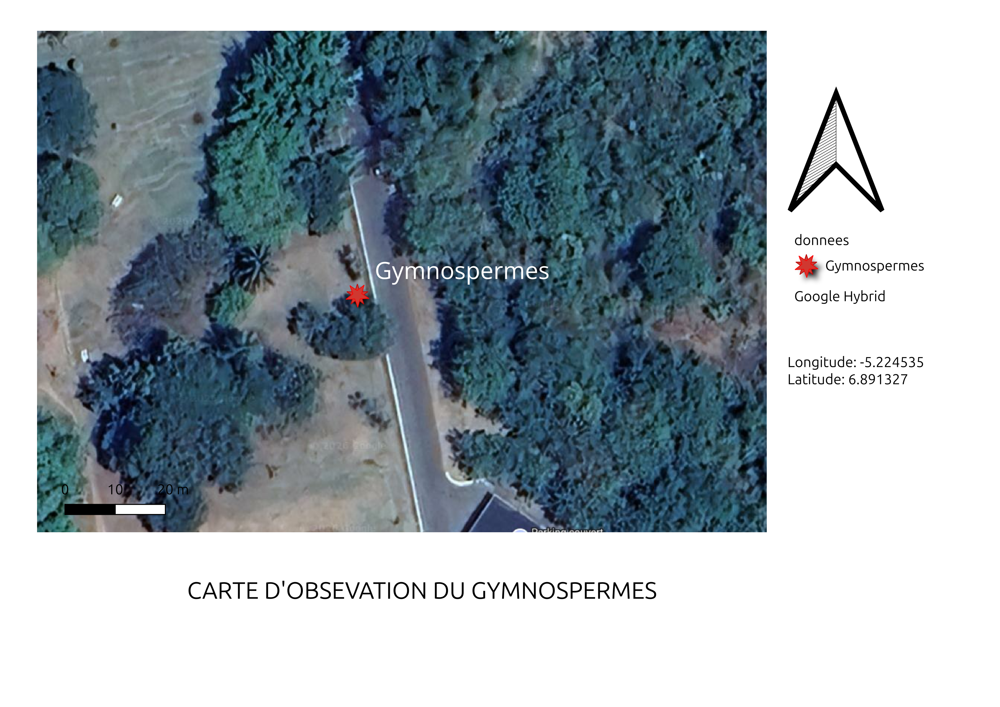

Le problème résolu : se reproduire sans eau libre
Les gymnospermes inventent le pollen, qui transporte le gamète mâle par l'air, et l'ovule protégé qui donne la graine. La graine est « nue » : elle n'est pas enfermée dans un fruit. Âge des premières graines : environ 370 millions d'années, Dévonien (ordre de grandeur).

Conifères et cycas : la graine nue
Reproduction
Les graines sont portées à nu sur les écailles. La pomme de pin n'est pas un fruit. Le gamétophyte est réduit à quelques cellules.

Observé sur le terrain
E10-06 | Gymnospermes | inconnue | Trouvé | -5.224535 | 6.891327 | 4 |2026-11-21 11:26:59 | sec | soleil |